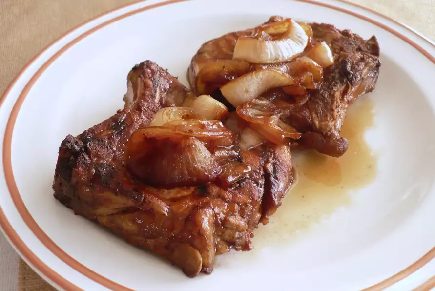

Honey Soy Sauce Pork Chops

Sweet Succulent Juicy Pork Chops
Grilled pork chops brushed with a honey and soy sauce mix.
To round out the meal, serve with creamy chive and garlic
mashed potatoes.
- Honey
- Soy Sauce
- Crushed Red Pepper Flakes
- Fresh Ground Black Pepper
- Pork Chops
- Canola Oil
- Salt
- Sliced Sweet Onion
Steps
- Preheat grill on high heat. Lightly oil the grate.
- Mix honey, soy sauce, red pepper flakes, and black pepper in a bowl.
- Brush chops with canola oil and sprinkle salt and black pepper.
- Grill pork chops on hottest part of grill for 4 to 5 minutes each side
- Move pork chops to cooler area and brush glaze on both sides generously. Keep cooking for 3 to 4 minutes more.